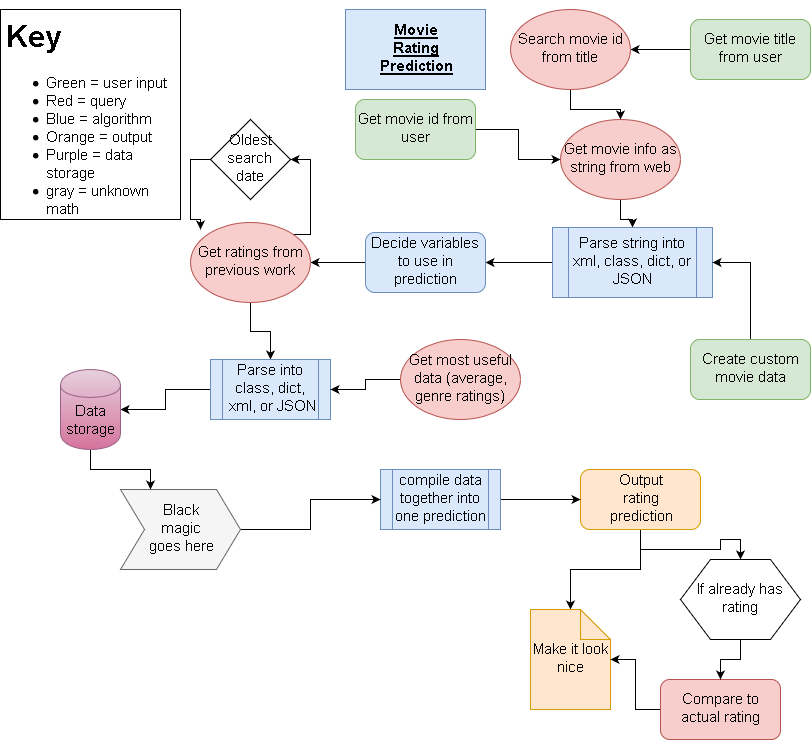

The goal of this project is to predict the movie rating of a movie title entered by the user. Our prediction relies on IMDb and TMDb datasets, using our statistical model. We also implemented a rudimentary algorithm that allows the model to learn and improve from past predictions.
In September 2017, we joined forces under UCSB's Data Science Club with the ambitious idea of creating a website that would predict movie ratings. We are a small group of 3rd year UCSB students with majors ranging from Computer Engineering to Actuarial Science.
School: UC Santa Barbara
Club: Data Science
The goal of this project is to predict the movie rating of a movie title entered by the user. Our prediction relies on IMDb and TMDb datasets, using our statistical model. We also implemented a rudimentary algorithm that allows the model to learn and improve from past predictions.
The main program takes in a name of a movie from the user. It then downloads the ID's of the actors and other parameters from TheMovieDB.org. Those ID's are then compared against the previous ratings of movies those actors have starred in. The final resulting list of ratings is then averaged and weighted together to form the final rating guess.

Data Sources: IMDB, TheMovieDB
Languages: Python, HTML, JS